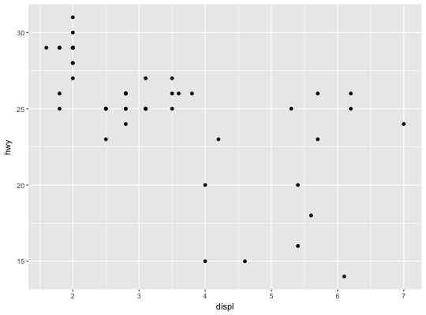

Add a new component to a ggplot or theme object.
This operator allows you to add objects to a ggplot or theme object.
# S3 method for gg +(e1, e2) e1 %+% e2 e1 %+replace% e2
Arguments
Adding on to a ggplot object
You can add any of the following types of objects:
-
uneval: replace current aesthetics -
layer: add new layer -
theme: update plot theme -
scale: replace current scale -
coord: override current coordinate system -
facet: override current coordinate faceting -
list: a list of any of the above.
To replace the current default data frame, you must use %+%,
due to S3 method precedence issues.
Adding on to a theme
+ and %+replace% can be used to modify elements in themes.
+ updates the elements of e1 that differ from elements specified (not
NULL) in e2. Thus this operator can be used to incrementally add or modify
attributes of a ggplot theme.
In contrast, %+replace% replaces the entire element; any element of
a theme not specified in e2 will not be present in the resulting theme (i.e.
NULL). Thus this operator can be used to overwrite an entire theme.
See also
Examples
# Adding on to a plot ----------------------------------------------- base <- ggplot(mpg, aes(displ, hwy)) + geom_point() base + geom_smooth()`geom_smooth()` using method = 'loess'# To override the data, you must use %+% base %+% subset(mpg, fl == "p")# Alternatively, you can add multiple components with a list. # This can be useful to return from a list. base + list(subset(mpg, fl == "p"), geom_smooth())`geom_smooth()` using method = 'loess'# Adding on to a theme ---------------------------------------------- # Compare these results of adding theme objects to other theme objects add_el <- theme_grey() + theme(text = element_text(family = "Times")) rep_el <- theme_grey() %+replace% theme(text = element_text(family = "Times")) add_el$text#> List of 11 #> $ family : chr "Times" #> $ face : chr "plain" #> $ colour : chr "black" #> $ size : num 11 #> $ hjust : num 0.5 #> $ vjust : num 0.5 #> $ angle : num 0 #> $ lineheight : num 0.9 #> $ margin :Classes 'margin', 'unit' atomic [1:4] 0 0 0 0 #> .. ..- attr(*, "valid.unit")= int 8 #> .. ..- attr(*, "unit")= chr "pt" #> $ debug : logi FALSE #> $ inherit.blank: logi FALSE #> - attr(*, "class")= chr [1:2] "element_text" "element" #>rep_el$text#> List of 11 #> $ family : chr "Times" #> $ face : NULL #> $ colour : NULL #> $ size : NULL #> $ hjust : NULL #> $ vjust : NULL #> $ angle : NULL #> $ lineheight : NULL #> $ margin : NULL #> $ debug : NULL #> $ inherit.blank: logi FALSE #> - attr(*, "class")= chr [1:2] "element_text" "element" #>